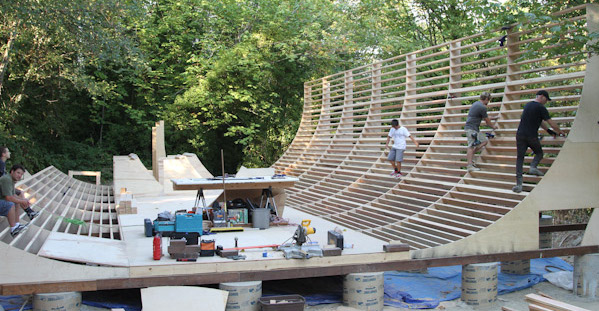
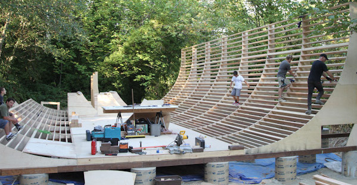

The ramp will be 13.5' tall with 2 feet over vert. It will have 14' of flat bottom, and 8' side decks on both sides. It will be covered by a 55' wide by 60' long ClearSpan HD tension fabric building.
The transition sections are 8' wide framed with 2x6 with independent templates. This will allow the ramp to be assembled and dissembled in sections. This is consistent with how virtually all modern vert ramps are built.
The Framing is 8" on center on the transitions. 1' OC on the flat and 16" OC on the decks. Framing is doubled up at 4' increments to accommodate solid plywood seams. Decks are framed with 2x8.
The ramp transitions are layered with two layers of 3/8 CDX ply and one layer of AB ply. The top layer of AB ply is sanded and free of voids. It is also a denser higher quality ply that adds strength and quality. This also means that we don't have to fill voids in order to prevent soft spots. The riding surface will be 3/8 birch layed diagonally.
The first two layers of 3/8 also lets us use one layer of 3/4 for the flat, then one more layer of 3/8 over everything. This saves time on the build. The 3/4 ply is a solid cross band ply. It is a high grade engineered product designed for structural flooring underlayment. It is sanded and has no voids on the internal plys. This will also be used for the decks and templates.
We have a team that will work well together and deliver a world
class ramp. Lots of experience here. We have not cut corners and have
selected high quality materials. All framing is Doug Fir and the ply
is high quality. No budget lumber. High quality wood makes a huge
difference!
